| 验收目标 | 状态 | 证据 |
|---|---|---|
| 棋子清晰、美观、易操作 | ✅ | 棋子半径增大 68%、军种图标、阵营配色、棋背纹理、状态反馈 |
| 海上合法航空线路全部可用 | ✅ | 66 停靠点 1 连通分量；20 局模拟 195 次飞机移动、0 非法 |
| 战斗机可击败侦察机 | ✅ | 矩阵 attacker_wins；模拟中 6/6 击杀；浏览器实测 |
| 原有功能保持正常 | ✅ | 56 项主测试 + 56 项旧网格版测试全部通过 |
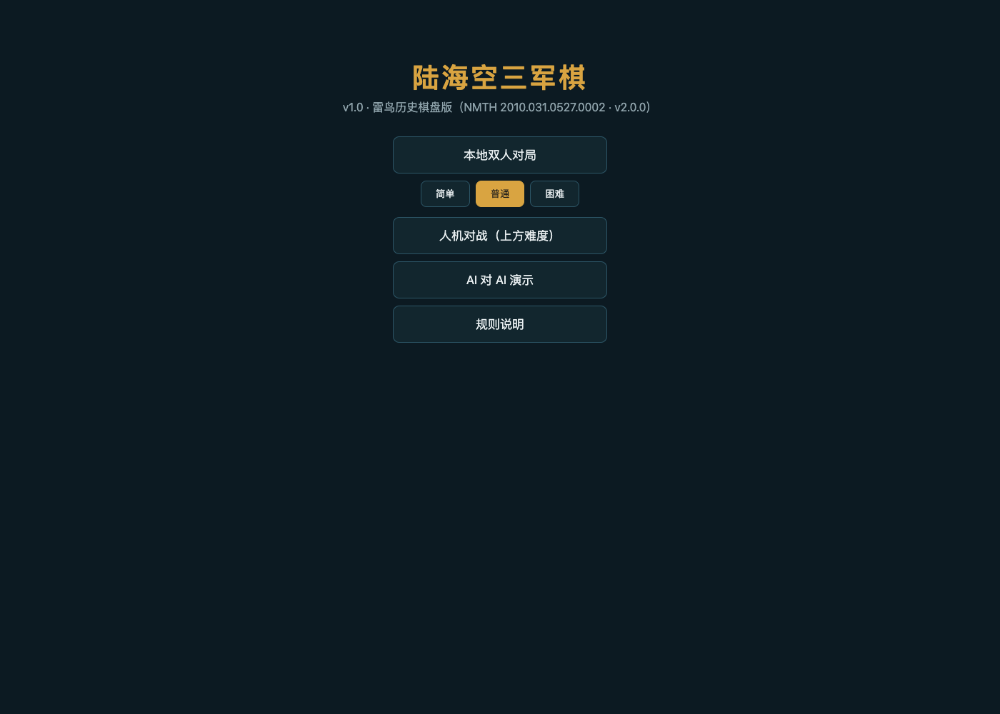
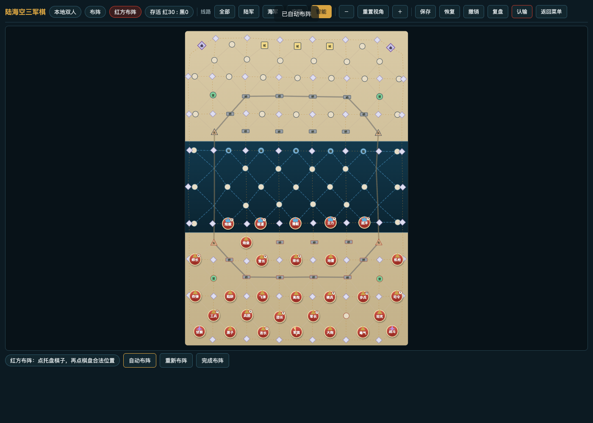
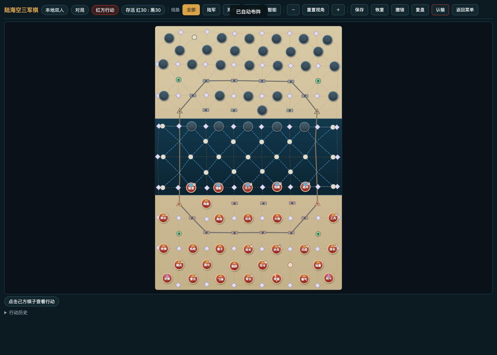
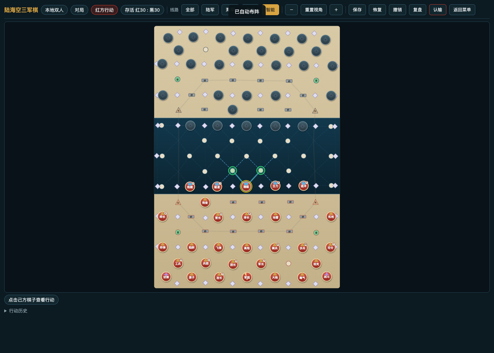
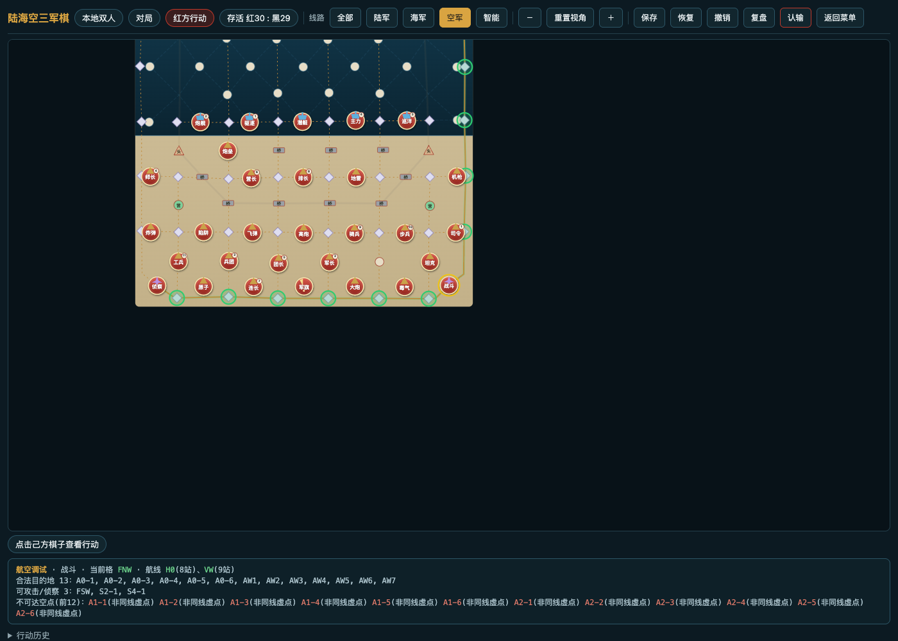
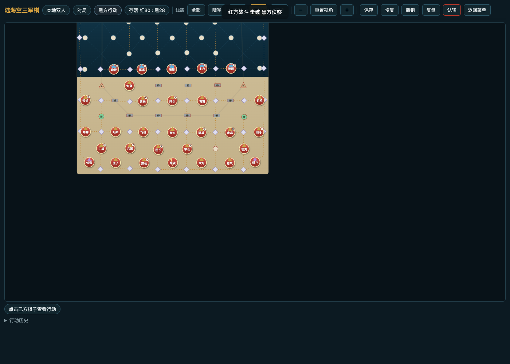
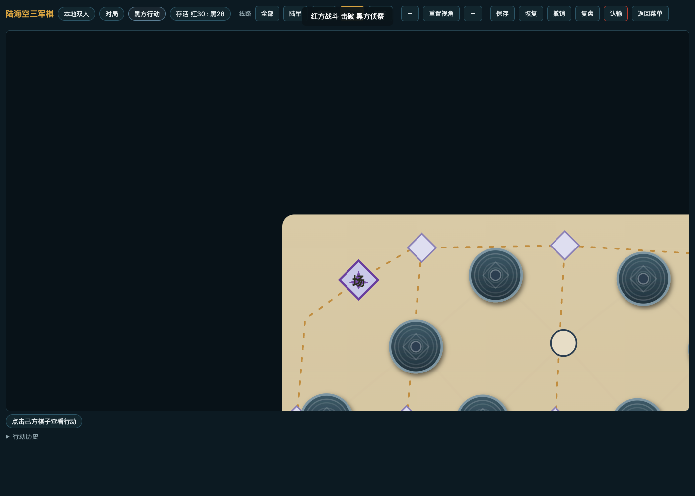
fighterAttackTargets 仅用航線下方地面/海面投影，遗漏同航線的空中黑点，导致战斗机/侦察机无法把敌方飞机识别为目标 → 即「战斗机无法攻击侦察机」。审计发现 4 对空中停靠点视觉同排相邻却未连通：A3-1↔AW3、A3-6↔AE3、A4-1↔AW5、A4-6↔AE5（dx≈88–92、dy≤1）。原因是冻结图 v2.0.0 的 H3.1/H4.1 未包含西/东边缘空点，而其余各行均连通。已在引擎层以 AIR_PATCH 补齐这 4 条水平航段（不改 data/board.json，graphEdges 仍 271 边）。实测航空线 104→108 条，AW3 可直达 A3-1。
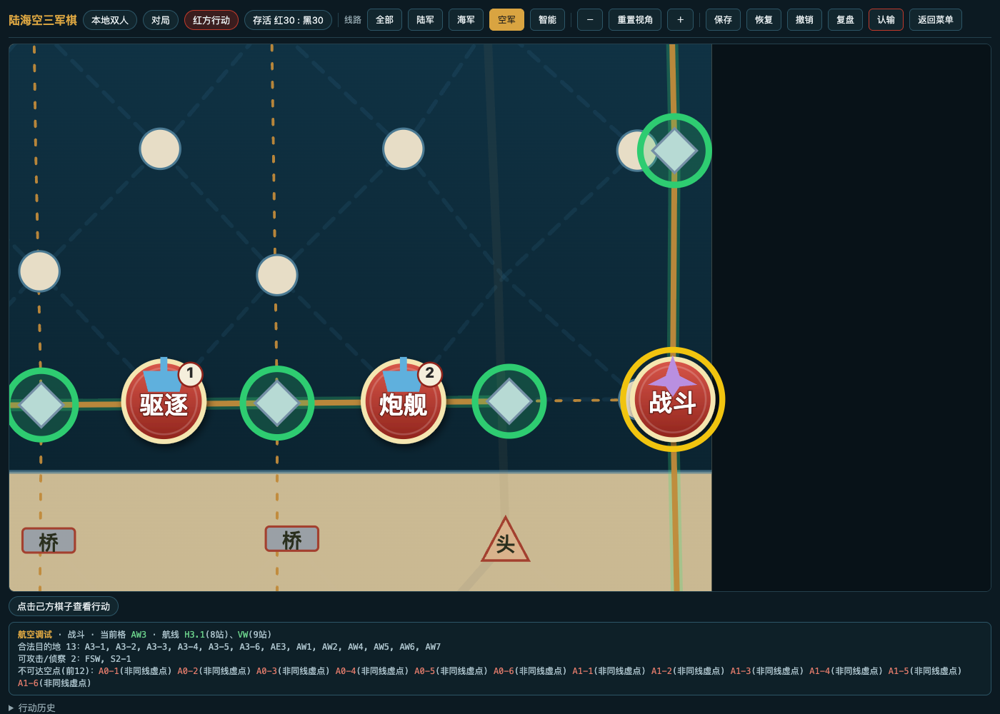
海面中排（y≈600）只有西/东边缘空点 AW4/AE4，冻结图无横向航段，已补 HMID = [AW4, AE4] 中间横线（航空线 108→109）。另：战斗机击杀空中目标后现飞抵目标所在黑点（A1-3 击杀 A1-2 侦察机 → 战斗机停在 A1-2）；空对地/海仍为飞越不移动。
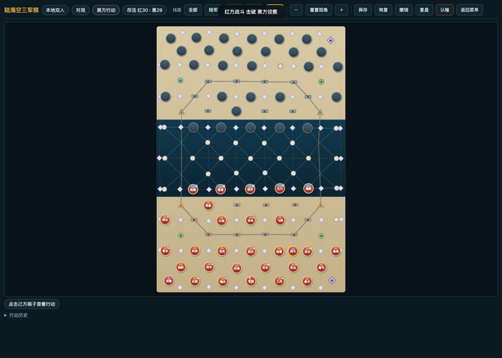
海面 M1/M3 行各仅有中间 4 点，缺西/东边缘各 2 点（两条跨海铁路桥下方），共 4 点。已在引擎层补 M1-0/M1-5/M3-0/M3-5（海面节点 29→33，海路恢复完整梅花桩，不改 data/board.json）。另按反馈移除「点击棋子自动居中」，保留滚轮缩放/拖拽/双击重置。
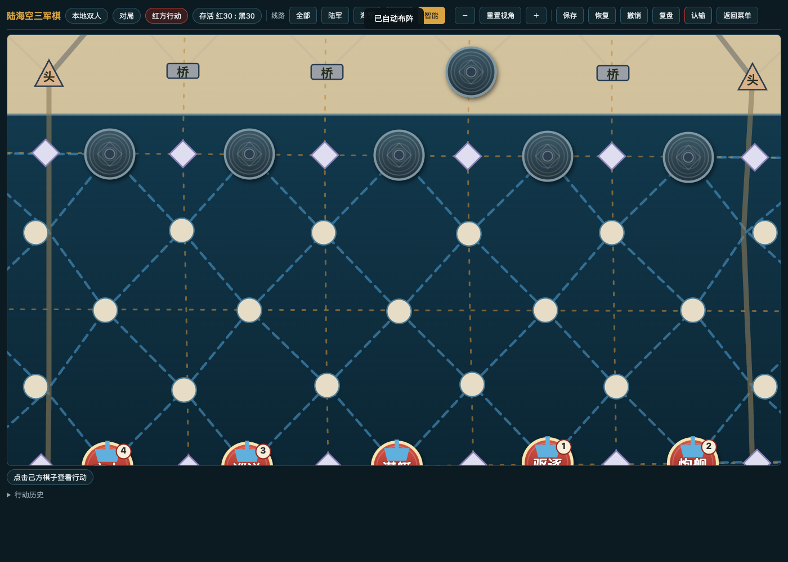
| 项 | 结果 |
|---|---|
| 矩阵 fighter→scout | attacker_wins |
| 矩阵 scout→fighter | defender_wins |
| 引擎 A1-3 战斗攻 A1-2 侦察 | 侦察机被消灭，战斗机存活 |
| 浏览器 FNW 战斗攻 FSW 侦察 | 侦察机被消灭（红30:黑28） |
| 20 局 AI 模拟遭遇 | 6 次，战斗机击杀 6 次 |
$ npm test # tests 57 # pass 57 # fail 0 $ npm run test:legacy # tests 56 # pass 56 # fail 0
$ node demo/air-sim.mjs 20 结束局数: 20/20 · 未结束: 0 非法动作: 0 · 异常: 0 总回合: 3208 · 平均: 160.4 飞机移动: 195 空战次数: 174 战斗机↔侦察机 遭遇: 6（战斗机获胜击杀 6） 防空拦截(飞机被击落): 5
docs/11-air-audit.md。
一条命令 python3 make-dist.py 产出四个可分发文件：
| 产物 | 平台 | 体积 | 说明 |
|---|---|---|---|
三军棋.html | Windows / macOS / Linux | 304 KB | 单文件，双击用浏览器打开，零安装零联网 |
三军棋-便携版.zip | 同上 | 54 KB | html + 启动器 + 使用说明 |
TriserviceChess-Windows-免安装版.zip | Windows 10/11 x64 | 115 MB | 真 .exe（Electron 33.2.0 运行时 + 游戏） |
三军棋-macOS.app.zip | macOS 11+ | 0.5 MB | 原生 Swift + WKWebView .app |
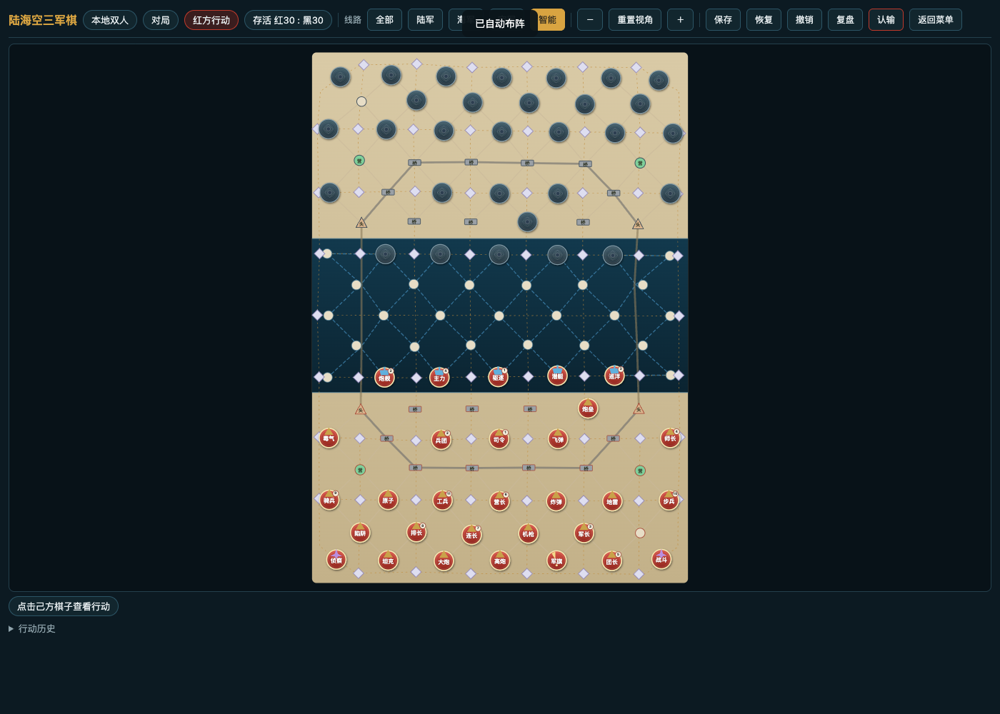
把 Windows 包解压出来的 resources/app 原样交给同版本 Electron 运行，自检脚本依次点击「本地双人对局 → 自动布阵 → 完成布阵 → 确认接手 →（黑方同样操作）」，然后截图并退出：
SMOKE {"title":"陆海空三军棋 …","svg":true,"boardNodes":173,"piecesOnBoard":60,
"piecesInState":60,"occupancy":60,"phase":"playing","turn":"red","errors":null,
"steps":{...全部 true}}
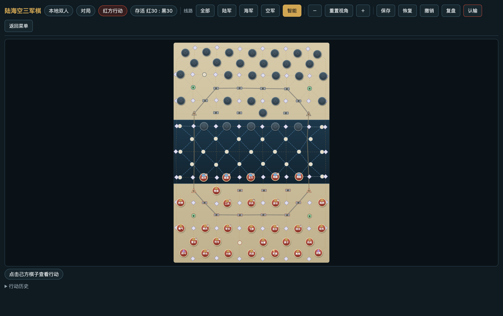
SHASUMS256.txt 校验 SHA-256。zip 时中文名退化成 ?????，已改为 Python zipfile + UTF-8 标志位）。game.html 与 dist/三军棋.html 哈希完全一致，SEA_PATCH_NODES / HMID 补丁确认在内。hdiutil 在构建沙箱里被拒（newfs_apfs: Operation not permitted），改用 .app.zip，在普通 macOS 机器上一条 hdiutil create 即可补出 dmg。